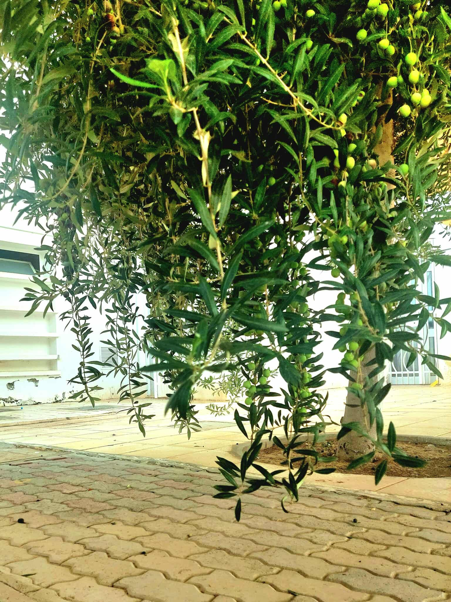
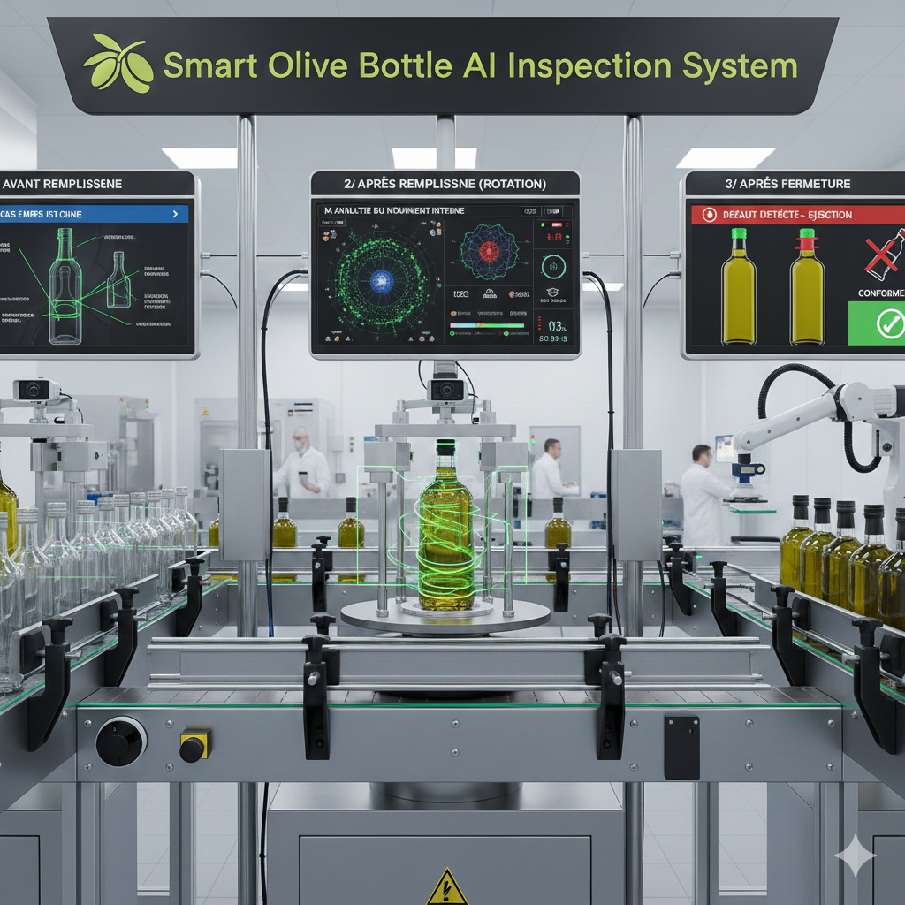
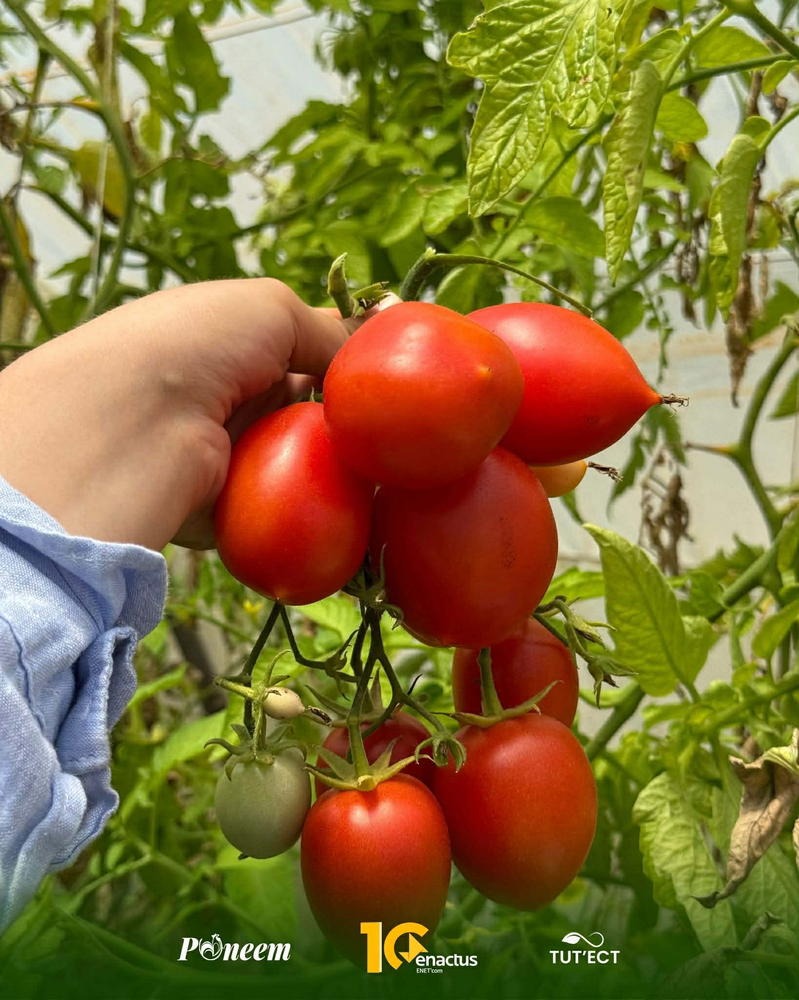
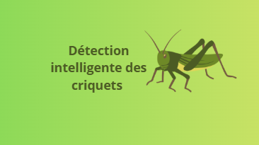

Système d'Irrigation Intelligent
Développement d'un système IoT pour optimiser l'irrigation basé sur l'humidité du sol, la météo et les besoins des cultures.
2024-2025
Déployé
Détection des Maladies foliaires chez les oliviers
Application mobile utilisant l\'intelligence artificielle pour identifier les maladies à partir de photos.
2024-2025
Déployé
olivia-hack
Détection intelligente des corps étrangers pour un contrôle qualité fiable de l’huile d’olive.
14-02-2026
Déployé.jpg)
Drone de Surveillance des Cultures
Système de drone autonome pour cartographier et analyser l'état de santé des cultures à grande échelle.
2025-2026
Déployé
TuTECT
utilisant l’intelligence artificielle pour détecter Tuta absoluta à partir d’images des feuilles de tomate
14-02-2026
Déployé
Agriculture 4.0
Système intelligent de surveillance et détection des criquets pour l'agriculture de précision
2025-2026
Voir Détails →